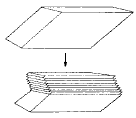
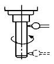

사출(프레스)금형산업기사 (2002-05-26 기출문제)
1과목: 금형설계
1. 다음 중에서 사출성형기로부터 사출된 수지가 금형의 성형부까지 통과하는 통로를 올바르게 나타낸 것은?
- 노즐 - 러너 - 스프루 - 게이트 - 캐비티
- 노즐 - 게이트 - 스프루 - 러너 - 캐비티
- 노즐 - 스프루 - 러너 - 게이트 - 캐비티
- 노즐 - 게이트 - 러너 - 스프루 - 캐비티
(정답률: 83%)

2. 다음은 사출기의 직압식과 토글식에 대한 비교이다. 이 중에서 잘못된 것은?
- 금형부착은 직압식이 토글식에 비해 쉽다.
- 형체력의 조절은 직압식이 토글식에 비해 쉽다.
- 동작속도는 토글식이 직압식에 비해 빠르다.
- 형체 스트로크는 토글식이 직압식에 비해 크다.
(정답률: 39%)
3. 호칭치수 180mm 인 성형품을 수축율 5/1000인 ABS 수지로 가공하기 위하여 금형치수는 얼마로 제작하여야 하는가?
- 180.90mm
- 180.00mm
- 179.95mm
- 179.00mm
(정답률: 81%)
4. 성형품에 구멍이나 두개이상의 게이트를 사용할 때 발생하는 현상은?
- 태움
- 플로 마크
- 웰드 라인
- 씽크 마크
(정답률: 48%)
5. 로케이트 링에 대하여 잘못 설명한 것은?
- 성형기의 노즐의 위치결정을 한다.
- 금형의 스프루 부싱의 위치결정을 한다.
- 제품의 호칭법은 규격번호로 한다.
- 금형의 탕구의 역할을 한다.
(정답률: 61%)
6. 다음 중 열가소성 수지로 옳은 것은?
- MF
- POM
- PF
- UF
(정답률: 77%)
7. 플라스틱금형의 이젝터 핀 선택에서 규격 및 품질로서 적당하지 않는 것은?
- 이젝터 핀 끝 부를 열처리 할 경우 HRC50정도로 한다.
- 끼워맞춤부는 연삭다듬질되어 있어야 한다.
- 제품의호칭은 핀의 몸통직경 × 머리부를 포함한 전체 길이로 나타낸다.
- 끼워 맞춤부의 거칠기는 25-S로 한다.
(정답률: 47%)
8. 사출금형에서 사출압력에 의한 변형을 피하기 위해 강도를 요하는 부분이 아닌것은?
- 받침판
- 캐비티 측벽
- 로케이트 링
- 가는 코어 핀
(정답률: 54%)
9. 다음 앵귤러 핀에 의한 언더컷 처리 방식중 앵귤러 핀 방식의 특징이 아닌 것은?
- 핀의 경사각도는 최대 25° 를 넘지 않도록 한다.
- 핀과 슬라이드 블록과의 틈새는 0.3 - 0.8 정도로 한다.
- 작동력은 형개폐력을 이용한다.
- 어느정도 금형이 열린 후 슬라이드 블록을 후퇴 시킨다.
(정답률: 58%)
10. 제팅 현상을 방지하기 위한 대책이 아닌 것은?
- 사출속도를 느리게 한다.
- 게이트의 크기를 키운다.
- 콜드슬러그웰을 크게 한다.
- 금형온도를 낮게 한다.
(정답률: 40%)
11. 다음과 같은 조건으로 V 굽임가공(자유굽힘)을 하려고 한다. 소요되는 힘은 약 몇 ton인가? (단, 재료의 인장강도 бb=40kg/mm2, 굽힘선의 길이 b=300mm, 판두께 t=1.6mm V형 굽힘의 어깨폭 W=8t, 정수 C=1.33 이다.)
- 3.2
- 2.0
- 6.4
- 4.0
(정답률: 25%)
12. 스프링백 방지법으로서 가장 많이 사용하는 방법은?
- 코너세트법
- 오버벤드법
- 인장법
- 플랜지법
(정답률: 45%)
13. 지름 6mm의 피어싱 펀치로 두께 0.8mm의 소재를 가공할 때 파일럿 핀의 지름을 구하면 몇 mm인가? (단, 지름 감소 계수는 0.⑤으로 한다.)
- 5.2
- 5.96
- 6.0
- 6.04
(정답률: 65%)
14. 펀치플레이트의 두께는 금형의 크기 및 하중 등에 영향을 주는데, 대략 펀치길이의 몇 %로 하는 것이 적합한가?
- (20 ∼ 30)%
- (30 ∼ 40)%
- (40 ∼ 50)%
- (50 ∼ 60)%
(정답률: 66%)
15. 트랜스퍼 이송장치인 핑거(finger)를 설계할 때 주의사항이 아닌 것은?
- 이송레벨위를 부드럽게 움직이면서 상부금형과의 간섭을 피하도록 한다.
- 설치와 분리가 쉽고 보수,보관이 쉽도록 한다.
- 무겁고 강성이 있도록 하여 안정성이 있게 한다.
- 연속운전하고 있는 프레스의 운동과 동조 시킨다.
(정답률: 58%)
16. 다음 중 전단가공 그룹에 속하지 않는 것은?
- 피어싱가공
- 블랭킹가공
- 시어링가공
- 플랜지가공
(정답률: 65%)
17. 금형재료를 절약할 수 있고, 2개 이상의 전단가공을 할 경우 다이의 중심거리가 정확하여 날 맞추기가 간단한 다이는?
- 일체 다이
- 부시 다이
- 분할 다이
- 노칭 다이
(정답률: 37%)
18. 다이세트(die set)의 선정은 용도에 따라 가장 적합한 것을 선택 적용하여야 한다. 다음 중 가장 정밀한 금형에 사용된는 다이세트는?(오류 신고가 접수된 문제입니다. 반드시 정답과 해설을 확인하시기 바랍니다.)
- BB형 다이세트
- CB형 다이세트
- DR형 다이세트
- FR형 다이세트
(정답률: 67%)
19. 4각 디프 드로잉 가공시 코너 부위에서 발생하는 주름의 발생 원인은?
- 반경 방향의 압축응력
- 원주 방향의 압축응력
- 반경 방향의 인장응력
- 원주 방향의 인장응력
(정답률: 49%)
20. 프레스 램(press ram)에 볼트로 고정하여 프레스와 금형을 연결시키는 금형 요소는?
- 펀치
- 생크
- 리턴 핀
- 넉아웃 핀
(정답률: 67%)
2과목: 기계가공법 및 안전관리
21. 금형에 표면처리를 하는 목적이 아닌 것은?
- 내마멸성 증가
- 마찰 증가
- 내열성 증가
- 윤활성 증가
(정답률: 74%)
22. 다음 그림은 소성변형의 한 형태이다. 외력의 작용에 의해 결정의 일부가 특정한 면을 경계로 평행 이동하여 이면에서 서로 대칭인 결정의 결합체가 되는 형태는?

- 슬립
- 인장
- 쌍정
- 전단
(정답률: 61%)
23. 잇수가 42개, 모듀울 4인 스퍼 기어를 가공하기 위한 소재의 지름은 얼마가 적당한가?
- 176mm
- 186mm
- 196mm
- 206mm
(정답률: 55%)
24. 와이어 컷 방전가공시 주로 사용하는 가공액은?
- 콩기름
- 염화나트륨 수용액
- 휘발유
- 순수한 물
(정답률: 79%)
25. 다음 중 소재를 축 방향으로 압축하여 길이를 짧게하는 작업의 명칭은?
- 늘리기
- 업세팅
- 넓히기
- 벌 징
(정답률: 66%)
26. 금속입자를 공작물 표면에 분사시켜 입자의 충격작용으로 금속 표면층의 경도와 강도 증가로 피로한계를 높여주는 가공법은?
- 숏 피닝
- 방전 가공
- 호닝 가공
- 레이져 가공
(정답률: 85%)
27. 드릴가공을 하기 위한 펀치 작업을 하고자 할 때 사용하는 펀치는?
- 핀 펀치
- 도팅 펀치
- 프릭 펀치
- 센터 펀치
(정답률: 89%)
28. 나사, 기어, 호브 등의 리드각 측정에 사용되는 공구현미 경의 부속품은?
- V형 지지대
- 심출테이블
- 경사센터 지지대
- 반사 조명장치
(정답률: 58%)
29. 다음 중 수(Hand)작업이 아닌 것은?
- 금긋기
- 줄작업
- 스크레이핑
- 콘터가공
(정답률: 77%)
30. 금형의 경면작업시 콤파운드(Compound)를 사용하는 작업은?
- 버핑
- 폴리싱
- 샌드블라스팅
- 슈퍼피니싱
(정답률: 37%)
31. 다음에서 와이어 컷 방전가공기의 가공 속도를 표시하는 것은?
- 단위시간당의 가공체적으로 표시
- 단위시간당의 가공단면적으로 표시
- 단위시간당의 가공중량으로 표시
- 단위시간당의 와이어 이송길이로 표시
(정답률: 49%)
32. 강을 담금질한 후 재료에 내부 응력을 제거하거나 인성을 주기 위한 목적으로 행하는 열처리는?
- 침탄법
- 풀림
- 뜨임
- 불림
(정답률: 61%)
33. 방전가공에서 전극소모비의 표시법 중 측정이 간단하고 정확하므로 가장 많이 쓰이며 특히 공작물과 전극의 비중이 비슷할 경우에 쓰이는 표시법은?
- 체적 소모비
- 중량 소모비
- 형상 소모비
- 단면 소모비
(정답률: 43%)
34. CNC 머시닝센타에서 가공할 수 없는 작업은?
- 드릴 작업
- 선삭 작업
- 보링 작업
- 태핑 작업
(정답률: 50%)
35. 다음 중 금형조립시 편위 되는 것을 막기 위해 위치를 결정하는 방법이 아닌 것은?
- 홈에 의한 위치결정
- 블록의 외형에 의한 위치결정
- 클램프 고정에 의한 위치결정
- 다월 핀(dowel pin)에 의한 위치결정
(정답률: 32%)
36. 지름이 50mm인 연강봉을 선반에서 절삭시 주축의 회전수를 100rpm이라 할 때 절삭속도는 얼마인가?
- 13.7 m/min
- 14.6 m/min
- 15.7 m/min
- 16.7 m/min
(정답률: 60%)
37. 다음 중 NC 가공의 특징이 아닌것은?
- 복잡한 형상이라도 짧은 시간에 높은 정밀도로 가공 할 수가 있다.
- 기능의 융통성과 가변성이 높아 다품종 소량생산에 적합하다.
- 생산공장에서 가공의 능률화와 자동화에 중요한 역할을 한다.
- 숙련자라야 가공이 가능하고 한사람이 여러대의 기계를 다룰 수 있다.
(정답률: 66%)
38. 글리이슨 베벨 기어 절삭기에 의한 기어절삭은 다음 어느 절삭법에 속하는가?(오류 신고가 접수된 문제입니다. 반드시 정답과 해설을 확인하시기 바랍니다.)
- 형판법
- 성형법
- 창성법
- 총형법
(정답률: 60%)
39. 금형은 높은 정밀도와 숙련이 요구되는 노동 집약적 제품이다. 금형 제작비를 낮추는 방법이 아닌 것은?
- NC기계, 자동가공시스템을 적용하여 정밀도 향상, 시간을 단축 시킨다.
- 제품의 용도에 따라 금형의 정밀도를 정하여 제작한다.
- 열처리시 변형을 고려한 적절한 재료를 선택한다.
- 금형의 정밀도는 높을수록 좋다.
(정답률: 81%)
40. C급 블록 게이지는 주로 어디에 사용하는가?
- 공작용
- 검사용
- 표준용
- 참고용
(정답률: 39%)
3과목: 금형재료 및 정밀계측
41. 습동부분의 사출금형 부품용 재료로 가장 적합한 것은?
- Al-Cr-Mo강
- Ni-Cr강
- SM25C강
- 탄소강
(정답률: 38%)
42. 다음 측정기중에서 미터 표준눈금자를 내장하고 있지 않은 것은?
- 지침 측미기
- 버니어캘리퍼스
- 외측 마이크로미터
- 내측 마이크로미터
(정답률: 74%)
43. 간격변수로 나타내는 표면거칠기 파라미터는?
- S
- Rmax
- Rz
- Ra
(정답률: 37%)
44. 제조할 때 접종(Ca-Si 합금첨가)을 하여 응고와 동시에 흑연화가 이루어져 강인한 조직을 얻는다. 이런 주철을 무엇이라 하는가?
- Chilled주철
- Meehanite주철
- Pearlite주철
- Acicular주철
(정답률: 52%)
45. 보기는 밀링머신의 정적 정밀도 검사를 그림으로 나타내었다. 어떤 검사를 하고 있는가?

- 주축 외면의 흔들림
- 주축 끝면의 흔들림
- 주축 구멍 내면의 흔들림
- 주축 중심선과의 평행도
(정답률: 43%)
46. 한계 게이지의 마모 여유에 관한 일반적인 설명으로 가장 적합한 것은?
- 양쪽 다 준다.
- 정지쪽에 만 준다.
- 양쪽 다 주지 않는다.
- 통과쪽에 만 준다.
(정답률: 60%)
47. 금형강의 담금질처리시 발생하는 파손을 방지하기 위하여 담금질과 뜨임의 2공정을 같이 행하는 열처리는?
- 심냉처리
- 항온열처리
- 구상화처리
- 불림처리
(정답률: 58%)
48. 니켈-철 합금으로써 내식성이 좋고 열팽창계수가 20℃에서 철에(1/10)정도이며, 측량기구, 표준기구, 시계추 등에 사용되는 불변강은?
- 인바
- 초인바
- 엘린바
- 퍼멀로이
(정답률: 37%)
49. 공기마이크로미터의 형식이 아닌 것은?
- 유량식
- 배압식
- 유속식
- 차동식
(정답률: 66%)
50. 켈밋(Kelmet)은 Cu에 무엇을 첨가한 합금인가?
- Pb
- Sn
- Sb
- Zn
(정답률: 55%)
51. 18-8 stainless steel 에서 해당하지 않는 것은?
- Cr(18%)- Ni(8%)이다.
- 내식성이 우수하며 비자성체이다.
- Austenite 계이다.
- 뜨임 취성이 대단히 낮다.
(정답률: 74%)
52. 다음 중 블록게이지의 사용목적에 따른 등급이 아닌 것은?
- 공작용
- 검사용
- 표준용
- 합성용
(정답률: 79%)
53. α -Fe, γ-Fe 과 같은 상(相)이 온도 그 밖의 외적조건에 의해 결정격자형이 변하는 것을 무엇이라 하는가?
- 동소변태
- 자기변태
- 무확산변태
- 열변태
(정답률: 71%)
54. 일반적으로 다이캐스팅 금형용재질로 가장 적합한 것은?
- 주철
- 내열강
- 주강
- 탄소강
(정답률: 30%)
55. 전기 마이크로 미터에 사용되는 센서 형식이 아닌 것은?
- 유도형
- 저항형
- 아크형
- 용량형
(정답률: 43%)
56. 브리넬 경도 시험기에서 강철볼(steel ball)의 지름이 2mm, 하중이 471kgf이고 시편에 압입한 강철볼의 깊이가 0.5mm일 때 브리넬 경도 HB는?
- 75
- 150
- 37.5
- 300
(정답률: 44%)
57. 탄소강에서 적열 메짐성(Red shortness)을 방지하고 담금질 효과를 증가하기 위하여 첨가하는 원소는?
- 규소(Si)
- 망간(Mn)
- 니켈(Ni)
- 구리(Cu)
(정답률: 78%)
58. 삼침을 이용한 나사측정에서 외측거리 M=20.156mm, 피치는 2.0mm이었다. 이 때 유효지름은 몇 mm인가? (단. 이때 사용한 삼침의 직경은 0.57735P 이다.)
- 15.567
- 16.459
- 17.547
- 18.424
(정답률: 20%)
59. 선반 베드 진직도 검사시 0.02mm/1m의 눈금을 가진 길이 200mm의 수준기가 한 위치에서 다음 위치로 옮기니 2눈금 이동하였다. 이 때 경사는 몇 초인가?
- 4초
- 8초
- 20초
- 12초
(정답률: 37%)
60. 측정자와는 관계없이 우연하고도 필연적으로 생기는 오차로 측정횟수가 많을 때는 +, -가 상쇄되어 그 총합은 거의 0 에 가깝게 되는 오차는?
- 환경오차 (environment error)
- 우연오차 (accidental error)
- 과실오차 (erratic error)
- 이론오차 (theoretical error)
(정답률: 87%)